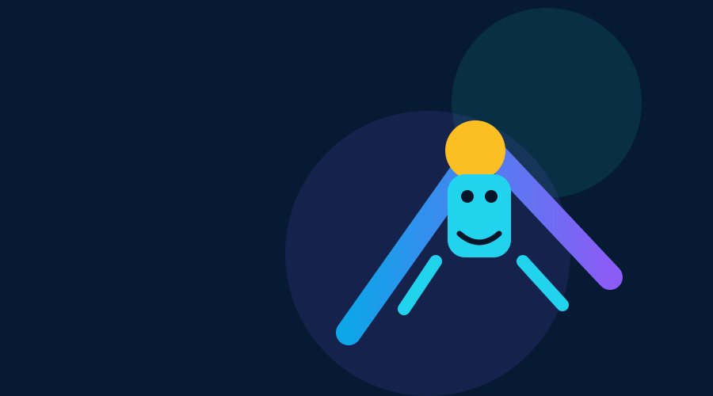

بوابة ألعاب 2D
ألعاب مختلفة فعلًا، تجربة واحدة ممتعة
نسخة اختبار داخلية مخصصة للتحقق من المحرك قبل بناء أي لعبة جديدة.
افتح اختبار المحرك
اختبار المحرك
اختبار داخلي فقطالتصنيفات
أفضل النتائج
المحرك المشترك
Input • Game States • Save • Audio • Particles • Collision • Screen Shake • Responsive Canvas
الـFramework مشترك، لكن Gameplay كل لعبة مستقل.